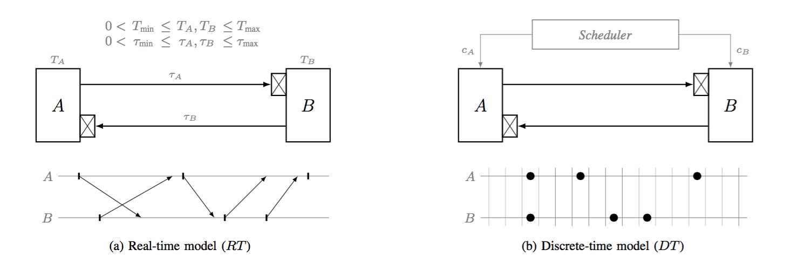

Soundness of the Quasi-Synchronous Abstraction
Guillaume Baudart, Timothy Bourke and Marc Pouzet
Paper submitted to FMCAD 2015
We study the link between real-time quasi-periodic architectures where computing units execute 'almost periodically' and the discrete-time quasi-synchronous abstraction that P. Caspi proposed for analyzing them. The simplicity of the abstraction is appealing: the only events are node activations; logical steps account for transmission delays; and no node may be activated more than twice between two successive activations of any other. The motivation is to verify properties of real-time distributed systems in the simpler discrete model.
By formalizing the relation between quasi-periodic architectures and the quasi-synchronous abstraction using L. Lamport's happened before relation, we show that the abstraction is sound for systems of two nodes. After showing that the abstraction is not sound for general systems with three or more nodes, we give sufficient restrictions on communication topologies to recover soundness.
You can find here the submitted paper, the Isabelle theory containing all the associated proofs (open the file with Isabelle 2014 or 2015 to run the proofs), the proof document generated from the Isabelle theory and Uppaal's models that illustrate the unsoundness of the abstraction for general systems with more than two nodes.
